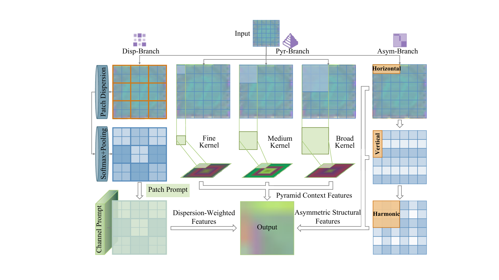

Medical image anomaly detection is central to timely diagnosis and clinical decision support, yet abnormal samples are costly to collect because of disease rarity, privacy concerns, and expert workload. This motivates unsupervised learning from normal images, where abnormalities are detected as deviations from learned normal patterns. However, medical anomalies are often subtle, local, and intertwined with normal anatomical variations, which complicates reliable normality modeling. Distillation-based methods support normality modeling by using frozen pretrained teachers as stable feature references, yet mismatches between generic teacher priors and student representations adapted to medical images can produce residuals unrelated to abnormalities in conventional distillation pipelines. To address this limitation, we propose the Collaborative Feature Refinement Network, which learns normality through a coupled process of shared feature conditioning before decoding and cross-space consistency after decoding. Shared feature conditioning performs medical-aware conditioning on teacher and student features under common rules, while cross-space consistency constrains each decoded stream with the complementary encoder representation for reciprocal normal reconstruction. The coupled process is further stabilized by the homework set reorganization strategy, which periodically refreshes normal training subsets. Experiments on six medical image benchmarks show competitive anomaly classification and strong anomaly localization performance.

CFR-Net uses a frozen teacher encoder as a stable generic feature reference and a trainable student encoder to adapt representations to medical images. Before decoding, the Shared Feature Conditioning Module (SFCM) applies the same medical-aware conditioning rules to the hierarchical features from both encoders.
After decoding, cross-space consistency constrains each decoded stream with the complementary encoder representation: teacher-origin decoded features are matched to the student feature space, while student-origin decoded features are matched to the teacher feature space. This reciprocal knowledge flow encourages normal reconstruction across both representation spaces.
Hierarchical discrepancy weighting emphasizes informative residuals through threshold amplification and dispersion-based weighting. Homework set reorganization periodically repartitions normal samples into training and homework subsets, allowing the model to revisit difficult normal cases during optimization.

SFCM conditions teacher and student features with shared parameters through three complementary paths. The Patch-Dispersion Branch derives channel and patch prompts from feature dispersion, the Pyramid Context Branch aggregates contextual information at multiple spatial scales, and the Asymmetric Structure Branch captures horizontal, vertical, and harmonic structural cues. Their outputs are fused with the input through residual connections before decoding.

In the table, bold values indicate the best results and underlined values indicate the second-best results. Across HIS, OCT17, APTOS, BrainMRI, LiverCT, and RESC, CFR-Net achieves the best performance in 7 of the 9 evaluated tasks, with a mean classification AUROC of 87.23% and a mean localization AUROC of 98.61%.
We present qualitative comparisons of anomaly localization maps and classification heatmaps. The results are arranged from left to right as the input image, predictions from CFLOW-AD, RD4AD, PatchCore, MKD, SimpleNet, DiAD, MSFlow, and URD, CFR-Net, and the ground-truth annotation. CFR-Net produces more compact and spatially precise anomaly responses, especially around lesion regions and layer-wise abnormal structures.

Examples of localization maps and classification heatmaps across different medical datasets.

Examples of predicted anomaly scores for normal and abnormal samples. Each image is shown with the score predicted by CFR-Net, where a higher score indicates a higher likelihood of being anomalous. These examples illustrate the model's ability to separate normal and abnormal cases under the normal-only training setting.
@article{nie2026cfr,
title={CFR-Net: Collaborative Feature Refinement Network for Medical Image Anomaly Detection},
author={Nie, Zihan and Xu, Muhao and Feng, Wei and Niu, Sijie and Wan, Yi and Wei, Xunbin and Li, Jianmei and Song, Weiye and Ge, Zongyuan},
journal={},
year={2026}
}